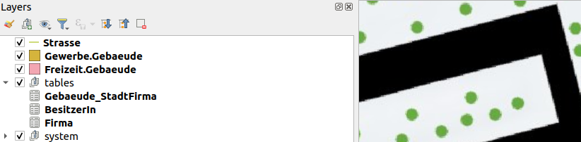
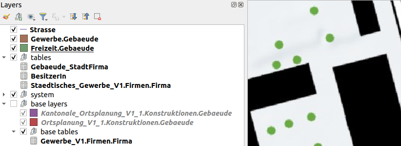
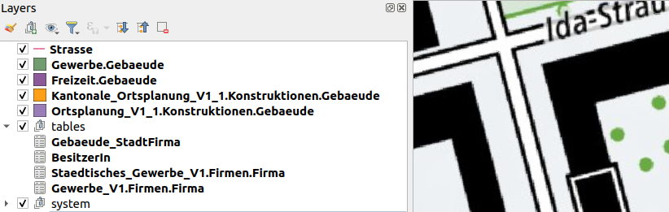
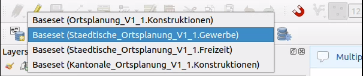
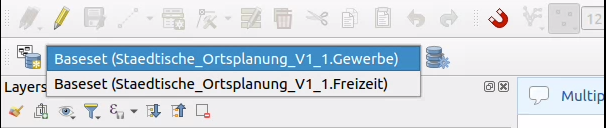

Projets optimisés pour les modèles étendus
If a model or topic contains extended classes, the inclusive base classes are implemented in the physical database. The users only want to see, what is relevant for them and mostly work on the most extended instance of the topics/classes. Model Baker detects the irrelevant tables and offers optimization strategies.
In the workflow wizard you can choose the optimization strategy and receive a nicely prepared layertree and forms.
But what is done in the backend?
Backend solution
Assumptions
Since it's impossible to care for all the cases, we need to make some assumptions what mostly would be the use case.
- When you extend a base class with the same name, you intend to "replace" it, otherwise you would rename it.
- When you extend a base class multiple times (what you do with different names) then you intend to "replace" it.
- Exception for the two cases above: When you extended the class in the same model but another topic (because if you intent to "replace" it, you would have made it
ABSTRACT).
Conclusion
- Base classes with same named extensions are irrelevant
- Base classes with multiple extensions are irrelevant
- Except if the extension is in the same model, then it's not irrelevant but will be renamed
And this means
A table is irrelevant when:
We find the table as base class with same named extension in another model OR we find the table in the base class with multiple extensions in another topic but the same or the extended model.
Limitations
There are use case that cannot be handled, like for example:
- When a class is extended in another model (but not the one you import, but still a depending model, so it's imported as well) it could be irrelevant because of this, but still you would have needed it.
- When you extend a topic and have a not-extended base class referencing to a base class that has an extension, then the referenced base class will be irrelevant. But you might want it.
What to do then? Well, you have always the option for the NONE-strategy.
Strategies
Let's check out the following example model and it's implementation according to the strategies on a database created with smart2intehritance.
Ortsplanung Example
More or less real live example with 3 levels and multiple extensions. Level 2 (cantonal) extends level 1 (national) and level 3 (city) extends parts of level 2 and parts of level 1.
Ortsplanung_V1_1using (not extending)Infrastruktur_V1.Kantonale_Ortsplanung_V1_1extendingOrtsplanung_V1_1(TOPICKonstruktionen).Gewerbe_V1.Staedtisches_Gewerbe_V1extendingGewerbe_V1.Staedtische_Ortsplanung_V1_1extendingKantonale_Otsplanung_V1_1(TOPICKonstruktionen) and usingStaedtisches_Gewerbe_V1.
See the models below...
Hide strategy
Base class layers with extensions of the same name are hidden and base class layers with multiple extensions also. Unless the extension is in the same model, then it's not hidden but renamed.

Relations of hidden layers are not created and thus the widgets for them neither.
Note
With smart1inheritance, the extended Gebaeude classes would all be summarised in a layer with a t_type, which defines what type of extension it is. This strategy hides the irrelevant values for ‘t_type’.
Group strategy
Base class layers with extensions of the same name are grouped, base class layers with multiple extensions also. Unless the extension is in the same model, then it's not grouped but renamed.

Relationships of grouped layers are created, but widgets are not applied to the form.
None strategy
Independently from extended models (but pretty much connected to it), we eliminate ambiguous layer naming in general. This means:
- If layername is ambiuous append topic name as suffix.
- If layername is still ambiguous append model name as suffix.

Example Models
Level 1 (national)
INTERLIS 2.3;
/* Ortsplanung as national model importing the infrastrukture used for using geometry types and connectiong to strasse */
MODEL Ortsplanung_V1_1 (en) AT "https://modelbaker.ch" VERSION "2023-03-29" =
IMPORTS Infrastruktur_V1;
TOPIC Konstruktionen =
DEPENDS ON Infrastruktur_V1.Strassen;
CLASS Gebaeude =
Name : MANDATORY TEXT*99;
Geometrie : MANDATORY Infrastruktur_V1.CHSurface;
END Gebaeude;
CLASS BesitzerIn =
Vorname : MANDATORY TEXT*99;
Nachname : MANDATORY TEXT*99;
END BesitzerIn;
ASSOCIATION Gebaeude_BesitzerIn =
BesitzerIn -- {0..1} BesitzerIn;
Gebaeude -- {0..*} Gebaeude;
END Gebaeude_BesitzerIn;
ASSOCIATION Gebaeude_Strasse =
Strasse (EXTERNAL) -- {0..1} Infrastruktur_V1.Strassen.Strasse;
Gebaeude -- {0..*} Gebaeude;
END Gebaeude_Strasse;
END Konstruktionen;
END Ortsplanung_V1_1.
INTERLIS 2.3;
/*National company register */
MODEL Gewerbe_V1 (en) AT "https://modelbaker.ch" VERSION "2023-03-29" =
TOPIC Firmen =
CLASS Firma =
Name : TEXT;
END Firma;
END Firmen;
END Gewerbe_V1.
Level 2 (cantonal)
INTERLIS 2.3;
/* Extended Ortsplanung as cantonal model importing national model */
MODEL Kantonale_Ortsplanung_V1_1 (en) AT "https://modelbaker.ch" VERSION "2023-03-29" =
IMPORTS Ortsplanung_V1_1;
TOPIC Konstruktionen EXTENDS Ortsplanung_V1_1.Konstruktionen =
CLASS Gebaeude (EXTENDED)=
Beschreibung: TEXT;
Referenzcode: TEXT;
!!@ ilivalid.msg = "Beschreibung and/or Referenzcode must be defined."
SET CONSTRAINT DEFINED (Beschreibung) OR DEFINED (Referenzcode);
END Gebaeude;
END Konstruktionen;
END Kantonale_Ortsplanung_V1_1.
Level 3 (city)
INTERLIS 2.3;
/* Extended Ortsplanung as city model importing cantonal (and with this the national) model and the city extension of the gewerbe model (and with this the national gewerbe).*/
MODEL Staedtische_Ortsplanung_V1_1 (en) AT "https://modelbaker.ch" VERSION "2023-03-29" =
IMPORTS Kantonale_Ortsplanung_V1_1, Staedtisches_Gewerbe_V1;
!! Freizeit is an extension of the cantonal Konstruktionen (note that there is a constraint there)
TOPIC Freizeit EXTENDS Kantonale_Ortsplanung_V1_1.Konstruktionen =
OID AS INTERLIS.UUIDOID;
CLASS Gebaeude (EXTENDED) =
Unterhaltungsart : TEXT*99;
istGeheim: BOOLEAN;
!!@ ilivalid.msg = "Beschreibung needed when top secret."
SET CONSTRAINT WHERE istGeheim:
DEFINED (Beschreibung);
END Gebaeude;
END Freizeit;
!! Gewerbe is an extension of the cantonal Konstruktionen (note that there is a constraint there)
TOPIC Gewerbe EXTENDS Kantonale_Ortsplanung_V1_1.Konstruktionen =
OID AS INTERLIS.UUIDOID;
DEPENDS ON Staedtisches_Gewerbe_V1.Firmen;
CLASS Gebaeude (EXTENDED) =
Nutzungsart : TEXT*99;
END Gebaeude;
ASSOCIATION Gebaeude_StadtFirma =
StadtFirma (EXTERNAL) -- {0..*} Staedtisches_Gewerbe_V1.Firmen.Firma;
Gebaeude -- {0..*} Gebaeude;
END Gebaeude_StadtFirma;
END Gewerbe;
END Staedtische_Ortsplanung_V1_1.
INTERLIS 2.3;
/*Extended Gewerbe as city model importing the national model */
MODEL Staedtisches_Gewerbe_V1 (en) AT "https://modelbaker.ch" VERSION "2023-03-29" =
IMPORTS Gewerbe_V1;
TOPIC Firmen EXTENDS Gewerbe_V1.Firmen =
OID AS INTERLIS.UUIDOID;
CLASS Firma (EXTENDED)=
EthischeBeurteilung : TEXT;
!!@ ilivalid.msg = "Needs an ethical evaluation (EthischeBeurteilung)"
SET CONSTRAINT DEFINED (EthischeBeurteilung);
END Firma;
END Firmen;
END Staedtisches_Gewerbe_V1.
Basket Handling
In the example models, the class BesitzerIn is designed in the topic Ortsplanung_V1_1.Konstruktionen. However if you work on an an extended topic (Staedtische_Ortsplanung_V1_1.Freizeit or Staedtische_Ortsplanung_V1_1.Gewerbe) you have to collect the objects of BesitzerIn in the dedicated basket and not in the basket that is an instance of the base-topic.
The Dastaset Selector provides you all the baskets you need according to the strategy.
Baskets of none strategy
On not optimized projects, Model Baker hides nothing for you. You are able to collect data on every inheritance-level and that means all topics containing this class are provided.

Baskets of hide or group strategy
On optimized projects, you only see the baskets of the relevant topics. Those are the topics that are most extended (not further extensions existing).
The baskets provided for the layer BesitzerIn are the following.

Confusion with the xml element name
Sometimes there is a confusion when in the data file the XML element name of objects divert from the XML element name of the basket. Find here the explanation.